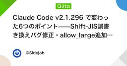
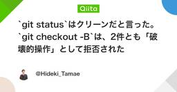
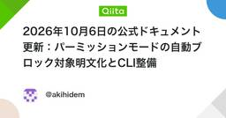
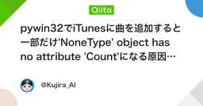
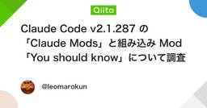
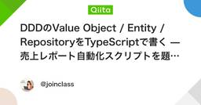
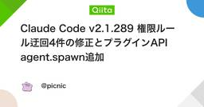

ClaudeCodeタグが付けられた新着記事 - Qiita
[PR] Qiita Conference 2026 Autumnのご紹介「Qiita Conference 2026 Autumn」とは、10月27日（火）〜29日（木）の3日間、オンラインで開催するエンジニア向けのカンファレンスです。参加費は無料で、事前申込が必要です。生成AI時代の開発・組織・ものづくりをテーマに、各分野の第一線で活躍する登壇者が日替わりで登壇します。ぜひご参加ください。Qiita Conference 2026 AutumnについてはこちらClaude Code（クロードコード） は、Anthropic 社が開発した大規模言語モデル（LLM）Claude をベースとした、コード生成やプログラミング、コード近代化（Code modernization）タスクに特化した開発支援ソリューションです。開発者やプログラマーが日常業務で直面する複雑なコーディングの課題を効率的に解決し、生産性を向上させることを目的としています。単にコードを生成するだけでなく、コードの意図やプロジェクト全体の文脈を理解し、適切な提案や自律的なタスク実行を行うことが可能です。主な用途高度なコード生成と自律的実行様々なプログラミング言語でのコード生成から、大規模なコードベースの移行作業やアーキテクチャの変更まで、高度なエージェント機能を用いて自律的に計画・実行します。バグの特定と修正提案コードの問題点やエラーを特定し、自らのミスや計画の不備を判断しながら適切な修正案を提示します。コードの最適化既存のコードをより効率的で読みやすい形にリファクタリングし、パフォーマンスや保守性を向上させます。ドキュメント生成コードや関数の概要、仕様に基づいて、自動的にドキュメントやコメントを生成します。Claude Codeの利点高いコーディング性能と効率的なツール連携最先端モデル（Fable / Mythos / Opus / Sonnet）の高度な推論力と効率的なツール呼び出し能力を活用し、複雑な開発タスクをスムーズに遂行します。深い文脈理解与えられたコードベース全体の文脈や意図を正確に把握し、システム全体に配慮した適切な提案を行います。強力なAIエージェント機能タスクに応じた柔軟なワークフローの制御が可能であり、複雑な非同期タスクや長時間の開発作業も確実に進行させます。開発プロセスの大幅な効率化コード生成、デバッグ、ドキュメンテーションといった時間を要する作業を自動化・補助し、開発者の負担を大幅に軽減します。リファレンス公式サイト: Anthropic - Our research and productsヘルプセンター: Anthropic Help CenterClaude APIドキュメント: Claude API DocumentationWikipedia: Claude (AI) - Wikipedia関連タグLLMClaudeAnthropic生成AI
フィード


















